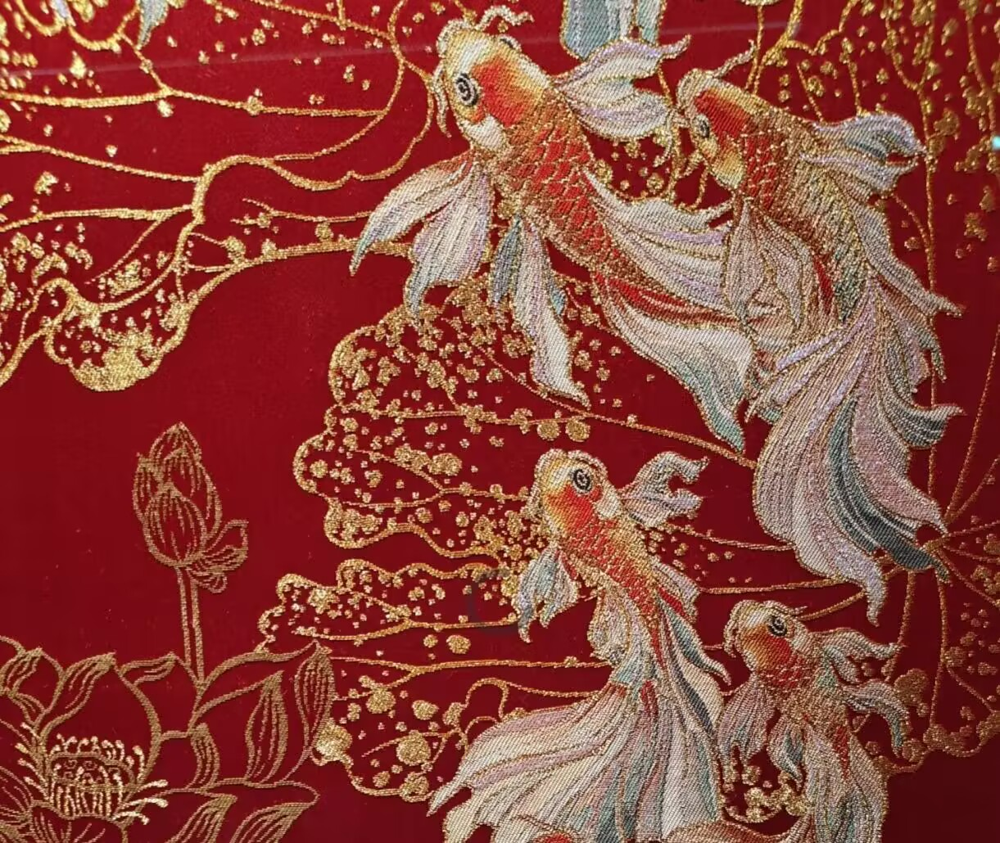
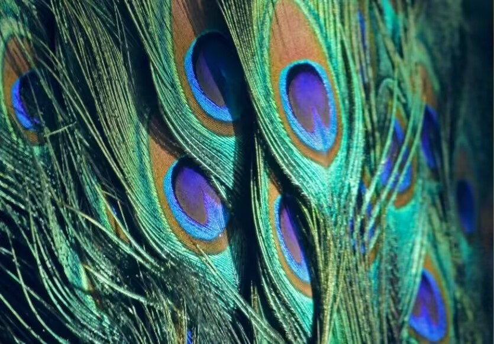

仙鹤街传说
仙鹤街传说是南京云锦最广为流传的民间故事，扎根于秦淮河畔的织锦文化，既饱含对善良匠人的赞颂，也藏着对贪婪恶行的警示，是云锦文化中最具温度的篇章。
版本一：善念感仙鹤
秦淮河畔有一对贫苦的织锦母子，虽家境贫寒，却始终以善待人——邻里缺布少线，母子俩总会分出自家的丝线；路人饥寒交迫，也会端出热粥接济。这份纯善感动了天上的七仙女，仙女派仙鹤下凡相助：自此母子的织机丝线取之不尽，织出的锦缎色彩如晚霞般绚丽，纹样中似有仙鹤翩飞。
当地贪婪的织锦东家听闻后，妄图霸占织机与仙鹤，带着家丁强闯民宅，却被锦缎上飞出的仙鹤啄伤手掌，落荒而逃。后人为纪念这份善意与仙鹤的守护，将母子居住的街巷命名为仙鹤街，至今仍是南京城南的知名地名。
版本二：云锦娘娘护匠人
清代南京老织锦艺人张永，手艺精湛却为人耿直，拒绝为财主偷工减料。财主将他锁在织坊，逼迫三日之内织出“松龄鹤寿”云锦屏风，否则便烧了织坊。张永日夜赶工，终因劳累晕倒在织机旁。
恍惚间，他见到身着锦缎的“云锦娘娘”现身，派两位仙女下凡相助：仙女指尖轻捻，丝线自动穿梭，云锦上的仙鹤似要振翅飞出。张永醒来时，屏风已织就完成，纹样栩栩如生。财主见后欲强抢织机，还纵火烧坊，却被云锦上飞出的仙鹤啄瞎眼睛，张永则被仙鹤驮出火海，安然无恙。此后，南京织锦匠人都尊云锦娘娘为守护神，祭祀祈福时总会供奉仙鹤纹样的锦缎。
云锦之名传说

天河织锦，落地成云
南京云锦的名字，源于南朝《殷芸小说》中的古老神话：天帝之女织女，居于天河之东，年年岁岁以云霞为线、星辰为梭，织就“云锦天衣”，其衣无针无缕，色彩如天上云霞般变幻，轻如蝉翼却坚如金石。
东晋时期，从长安迁徙至南京的织锦工匠，穷尽毕生心力钻研技艺，终于织出可与“云锦天衣”媲美的锦缎——日光下看，锦缎纹路似流云翻涌；月光下瞧，色彩如星河璀璨。世人惊叹：“此锦非人间所有，乃天上云锦也！” 自此，“云锦”之名便流传开来，既彰显其工艺的极致之美，也赋予了这份手艺浪漫的神话底色。
孔雀羽线传说
羽线生辉，匠心感天
云锦顶级的“妆花”工艺，需用孔雀羽线织造，使锦缎具灵动的金属光泽，这一工艺的由来，也藏着一段动人传说。
明代有位年迈的织锦工匠，为给皇后织造寿礼云锦，苦寻更璀璨的配色材料。他走遍江南山林，磨破了草鞋，熬白了头发，仍未找到满意的丝线。这份对技艺的执着与虔诚，感动了林中的孔雀仙子：仙子召集百只孔雀，自愿献出最艳丽的尾羽，赠予老匠人。
老匠人将孔雀羽拆解为细如发丝的羽线，与真金线、银线同织，终织出流光溢彩的云锦——日光下，羽线折射出孔雀开屏般的光泽；微风中，纹样似有孔雀翩跹。这则传说，既道出了孔雀羽线的珍贵，也诠释了古人“天人合一”的匠心理念：唯有敬畏自然、坚守匠心，方能织出传世之锦。

传说的文化意义
无史料佐证，却扎根人心
这些关于云锦的传说，虽无官方史料记载，也无确切的时间地点，却深深扎根于南京的市井文化之中。它们并非单纯的神话故事，而是织锦匠人精神的具象化：仙鹤传说赞颂“善”，名字传说彰显“美”，孔雀羽线传说诠释“专”，三者共同构成了云锦文化的精神内核。
如今，这些传说仍被南京的老匠人代代讲述，让冰冷的工艺有了温度，让千年的手艺有了情感。它们告诉后人：云锦不仅是丝线的编织，更是中国人对美好、善良与匠心的永恒追求。